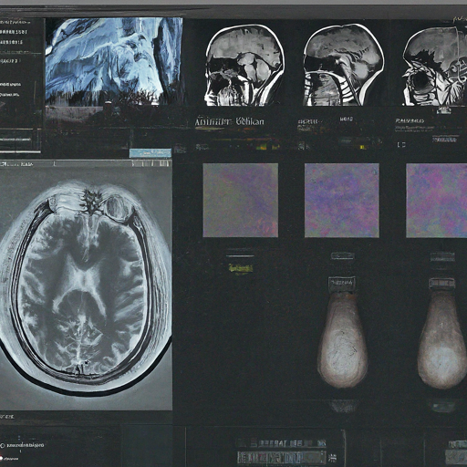
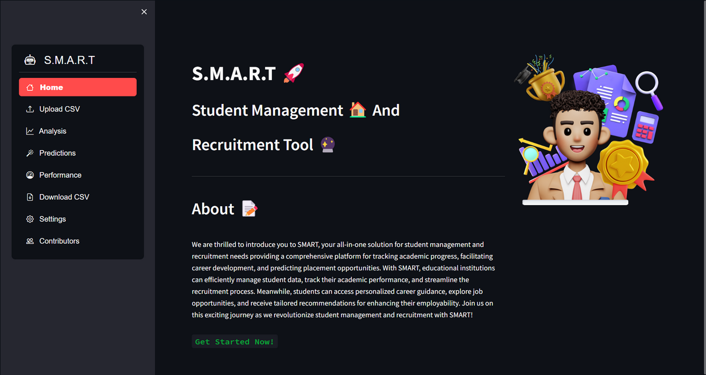
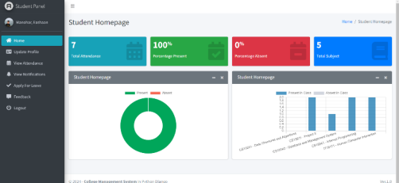
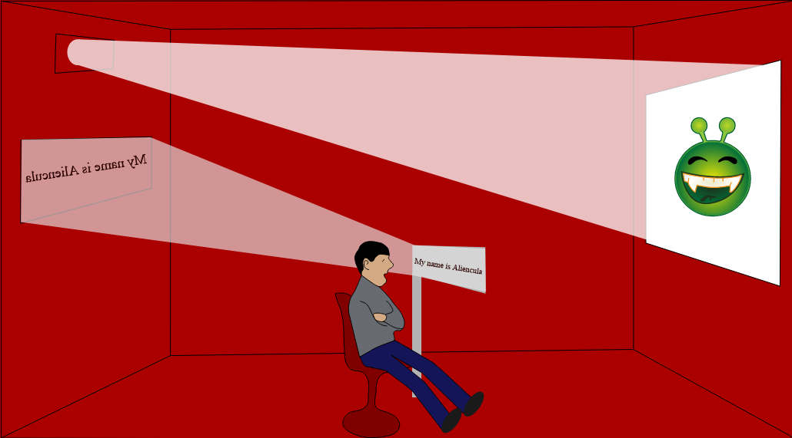
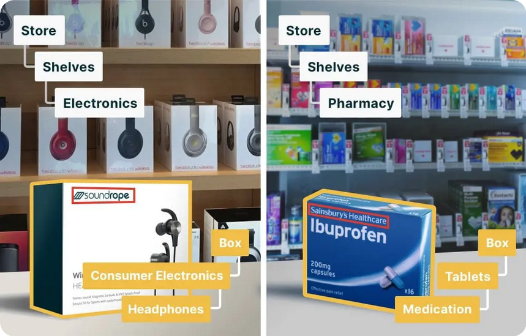

Passionate CS major with a strong affinity to code and caffeine (in equal measures I suppose xD). Inquisitive by nature, constantly active, sporadically productive :)
Outside academics and work, you will find me mostly engrossed in discussion on cinema, philosophy, carnatic music and life in general.
Research Interest: Large Language Models, Natural Language Processing, Generative AI, Machine Learning, Information Retrieval, Data Mining, Algorithmic Optimizations.
Conversational AI Platform: Built an auto-monitoring tool using RAG-based LLMs, Kafka, and APIs, delivering real-time actionable insights with 97% data coverage. The project won the HackAIThon for its ability to optimize incident detection time by 40% and reduce manual monitoring efforts by 50%.
AI-driven Incident Management Application: Developed a robust ML/NLP framework using Gemini LLM, LangChain, and Claude, enabling incident root-cause analysis. Integrated a Streamlit dashboard that provided real-time actionable insights, reducing incident resolution time by 35% and enabling a 25% decrease in recurring incidents.
CI/CD Automation: Automated the deployment lifecycle using AI pipelines, ML, Java, and Selenium. This streamlined process reduced time-to-production by 30% through auto-generated test reports and automated admin form submissions, saving 12 hours per deployment cycle.
Capacity Resource Forecasting and Routing: Designed a time-series ML model for resource capacity planning and intelligent payment channel routing. Achieved a 15% reduction in transaction costs and improved operational efficiency by 20% through optimized channel selection.
Jan 2024 - Jun 2024
Bank of New York
Developer - Intern
Worked in the UK Asset Servicing Engineering (ASE) team, focusing on automation, AI, machine learning, and monitoring controls.
Developed automated workflows to analyze ServiceNow incidents, identify patterns, and generate reports for ASE teams, leveraging Exploratory Data Analysis and Machine Learning techniques.
Achieved 94% accuracy with Ensemble Learning, SVM, Naive Bayes, and Random Forest models, resulting in a 68% reduction in recurring incidents and a 20% improvement in incident response time.
Collaborated with the AI Hub team to create AI solutions, including dashboards and automated reporting, achieving 98% monitoring coverage and 95% compliance.
Automated client user reporting for UK and US development teams, saving 20 monthly hours.
Hackathon, Knowledge Transfers & Recognition
Bank of New York
Bagged the Best Innovative Project Solution at the HackAIThon '24 for developing an efficient, scalable and end-to-end solution for Enterpise Risk and Control Hub's monitoring routine configuration platform using NLP and LLM techniques through the in-house AI functionalities and platform called Eliza.
Our solution for Intelligent Payment Routing Framework using ML model workflow, aimed at reducing intermittent transaction cost for the user bagged the top 1% solution in the Global AI Expo (out of 147+ solutions).
Conducted Knowledge Transfer sessions on Artificial Intelligence, Generative AI, Large Language Models, Responsible AI, ML, and DL.
Relevant Courses (University)
AI19341
Principles of AI
CS19643
Foundations of ML
CS19741
Cloud Computing
CS19741
DBMS
CS19P11
IOT Essentials
CS19P15
Data Mining
CS19541
Computer Networks
CS19542
Internet Programming
MA19454
Probability Theory
CS19441
OS
CS19341
Algorithms
CS19342
OOP Paradigm
CS19241
Data Structures and Algorithms using C
MA19252
Differential Equations and Complex Variables
Awards (Highlights)
Best Outgoing Student - CSE Department
Rajalakshmi Engineering College
Best Performing Student (Academics)
Rajalakshmi Engineering College
II and IV year
for securing highest CGPA.
Spotlight - Upcoming Researcher
Rajalakshmi Engineering College
Techathon - 2024 (CSE Department Tech Fest)
Recognition for actively participating in research and hackathon initiatives through NLP lab and various centres of excellence, along with successfully overseeing various technical clubs and organizing events.
Best Project Presentation
Rajalakshmi Engineering College
Innovative Project Lab - 2023
Best Software Designer
Cognizant
Cognizant CAFE Program
Best Overall Project
Cognizant
Cognizant CAFE Program
Best Student Award
X std. and High School
St. John's Senior Secondary School & The Hindu School
For outstanding leadership capabilities and academic performance along with proven contributions to school activities.
Certifications (Highlights)
Cloud and Digital Launchpad
PwC
National Topper - Top 2%
NPTEL (Cyber Security and Privacy)
RPA Citizen Developer
UiPath
AWS Cloud Foundations
AWS Graduate Academy
Foundation Training and Certification on Digital Marketing
HCL Sunshine Program (Govt. of TN initiative)
B2 First
Cambridge English
Plectrum Guitar Grade 6
Trinity College London
AI Pathways: Foundation, Intermediate, Advanced
Bank of New York (Udemy + LinkedIn Learning)
Technical Certification (Highlights)
Machine Learning
Stanford University (Andrew Ng)
Neural Networks and Deep Learning
DeepLearning.ai (Andrew Ng)
Generative AI with Large Language Models
DeepLearning.ai
Natural Language Processing with Classification and Vector Spaces
DeepLearning.ai
Non-Work Experience
Jan 2023 - May 2023
Cognizant CAFE Program
Sponsored Project (5 months)
Led a team of 4 members, in developing a logging framework for errors and exceptions for python application using microservice architecture reusable component.
The aim of the project was to create a pluggable enterprise level framework for python applications that has both file system and database capabilities.
Received high commendation from the CTO of engineering and the jury members for coming up with a scalable and efficient solution along with presenting the ideas clearly.
Awarded "Best Overall Project" and "Best Software Designer" for outstanding work. The code was accepted and is currently deployed in production (in use) across the organization.
Apr 2021 - Jun 2021
Stanford University
Code in Place - Section Leader
Selected as one of 1,100 global section leaders for Code in Place '21, Stanford's worldwide initiative to teach CS106A: Introduction to Python programming course during the pandemic.
Conducted weekly interactive discussions, facilitated problem-solving sessions, and mentored students to build strong programming foundations.
Cleared technical doubts through one-on-one sessions and discussion forums, ensuring deeper understanding and engagement, gaining positive feedback.
Collaborated with global peers to exchange teaching strategies, improve session engagement, and develop soft skills such as communication, and teamwork.
Mar 2021 - Jun 2024
Rajalakshmi Engineering College
Technical Clubs
Research Club: Founding member of the club, bringing 50 talented individuals with passion for research, to foster a culture for innovation and pursuit of excellence.
GDSC: Founding memeber of the club, that now is home to many high performing teams. Mentored 3 teams that won top 100 solutions in GDSC Hackathon Challenges.
IEEE CIS REC Chapter: Co-founded the college's IEEE chapter and conducted various technical workshops which now has over 600+ students. Currently, the society has been diversified into various disciplines namely Data Science, Machine Learning, Communications, etc.
Research Recognition (Highlights)
My final year project work "Scenery Description using Object Detection and Image Context Processing for Visually Impaired using ResNet, LSTM - Deep Learning Approach" has been accepted to present in the 7th Artificial Intelligence and Cloud Computing Conference (7th AICCC '24)
7th AICCC 2024
Tokyo, Japan
Scopus indexed Conference
Best Paper Award - AIML Track for my paper work "Captioning System for Movie Subtitling using Neural Networks and LSTM Architecture"
ICCCNet 2023
Manchester Metropolitan University, United Kingdom
Springer Conference
Bagged the Best Project Presentation Award for Innovate Project Lab for working on SMART - Placement Prediction System for college, under industry support from QuickPlay.
Rajalakshmi Engineering College - 2023
Latest works
Detection and Prevention of Cyberbullying among Children using Machine Learning Techniques
The Covid-19 pandemic has driven an increase in children's use of smartphones and social media, leading to a surge in cyberbullying incidents. To address this, I developed a machine learning-based system focused on detecting and preventing cyberbullying on WhatsApp Web. By allowing parents to grant access to their child's chat data through a secure QR code scan, the system can analyze conversations in real-time for harmful language and potential harassment. This automated approach ensures that parents can effectively monitor and protect their children from the dangers of cyberbullying, creating a safer online environment during these times of heightened digital interaction.
Multimodal Fusion for Brain Medical Image Segmentation using MMSegNet

A CNN model designed for multimodal medical image fusion represents a cutting-edge approach in healthcare, significantly enhancing disease identification and diagnosis by integrating data from diverse imaging modalities such as MRI, CT scans, and PET scans. This innovative technology improves patient care by providing more comprehensive and accurate insights into complex medical conditions, enabling clinicians to make better-informed decisions. The fusion of multiple imaging modalities through CNNs not only enhances diagnostic accuracy but also has the potential to revolutionize various fields of medical imaging.
Student Portfolio Management and Recruitment Tool

S.M.A.R.T, an all-in-one solution for student
management and recruitment needs
providing a comprehensive platform for tracking academic progress,
facilitating career development, and predicting placement opportunities.
With SMART, educational institutions can efficiently manage student data,
track their academic performance, and streamline the recruitment process.
Meanwhile, students can access personalized career guidance,
explore job opportunities, and receive tailored recommendations using Machine Learning,
for enhancing their employability.
Join us on this exciting journey as we revolutionize
student management and recruitment with SMART!
REConnect – Web Application for Department Management

In my recent project, I developed an intelligent application to digitalize college management processes, integrating automation, data analytics, and full stack development to streamline administrative workflows. This innovative platform replaces manual, paper-based tasks with a state-of-the-art digital system, significantly enhancing efficiency and transparency across the college environment. Key features include managing attendance, absences, on-duty requests, result disbursement, course registration, and placement processes, along with organizing campus events and industrial visits. By leveraging data analysis, machine learning, and artificial intelligence, the application not only simplifies college administration but also supports higher education and placement processes. This project aligns with the trend of digital transformation, providing a nimble user experience and promoting rapid digital growth within the education community.
Captioning System for Movie Subtitling using Neural Networks and LSTM Architecture

Presented at Manchester Metropolitan University's Springer Conference and honored with the "Best Paper Award - AIML," I developed an advanced captioning system for movie subtitling utilizing neural networks and LSTM (Long Short-Term Memory) architecture. This system leverages the power of deep learning to generate accurate and contextually relevant subtitles, enhancing the viewing experience for audiences. By training on extensive datasets and fine-tuning the model for various linguistic nuances, the project showcases the potential of AI in automating and improving subtitling processes, demonstrating significant advancements in the application of neural networks for media accessibility.
Scenery Description using Object Detection and Image Context Processing for Visually Impaired using ResNet, LSTM - Deep Learning Approach

In a project aimed at enhancing accessibility for the visually impaired, I developed a system for live object detection and scenery description utilizing LSTM (Long Short-Term Memory) and ResNet (Residual Networks) in deep learning. This innovative solution employs advanced neural network architectures to accurately identify objects and describe scenes in real-time, providing auditory feedback to users. The integration of LSTM for sequence processing and ResNet for image recognition ensures high accuracy and contextual relevance in descriptions, significantly improving the independence and quality of life for visually impaired individuals.
Reseach Works
The research portfolio explores various undertakings of mine in terms of conference research paper, technical book chapters that mostly is based on leveraging AI, ML, Blockchain, Data Science and Deep Learning to solve people's problems that helps me remain steadfast in envisioning my vision in helping humanity and connecting them through Artificial Intelligence. Details